Project: Chibi Style Blinking Gifs
Explore my latest project,These fullbody colorful characters with chibi style are available in still image and blinking gifs. 2024
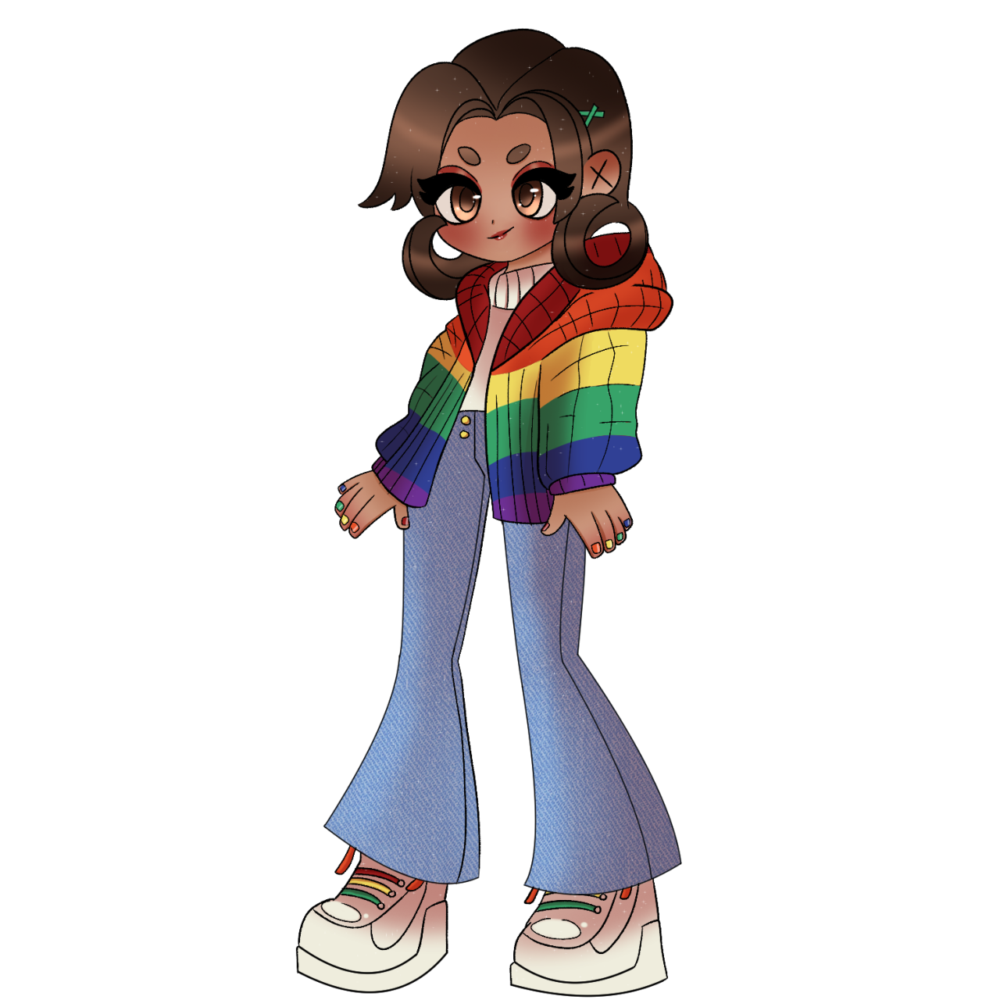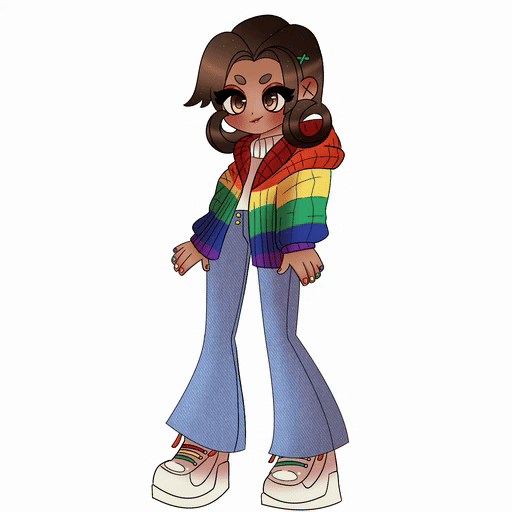 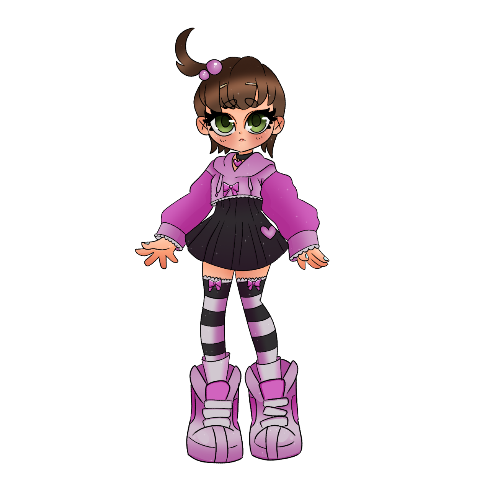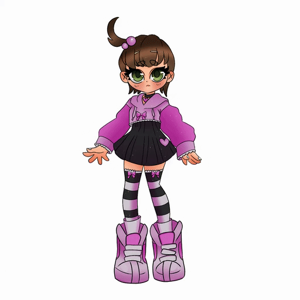 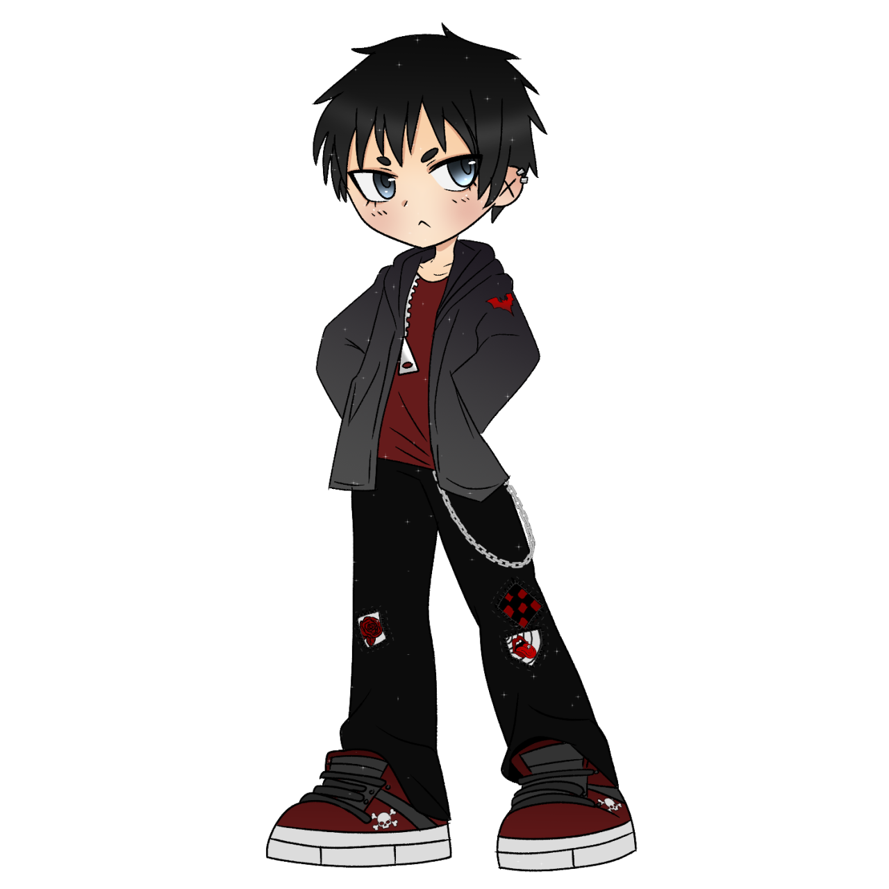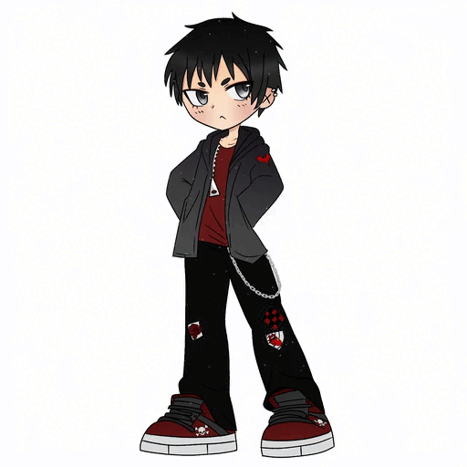
Explore my latest project,These fullbody colorful characters with chibi style are available in still image and blinking gifs. 2024
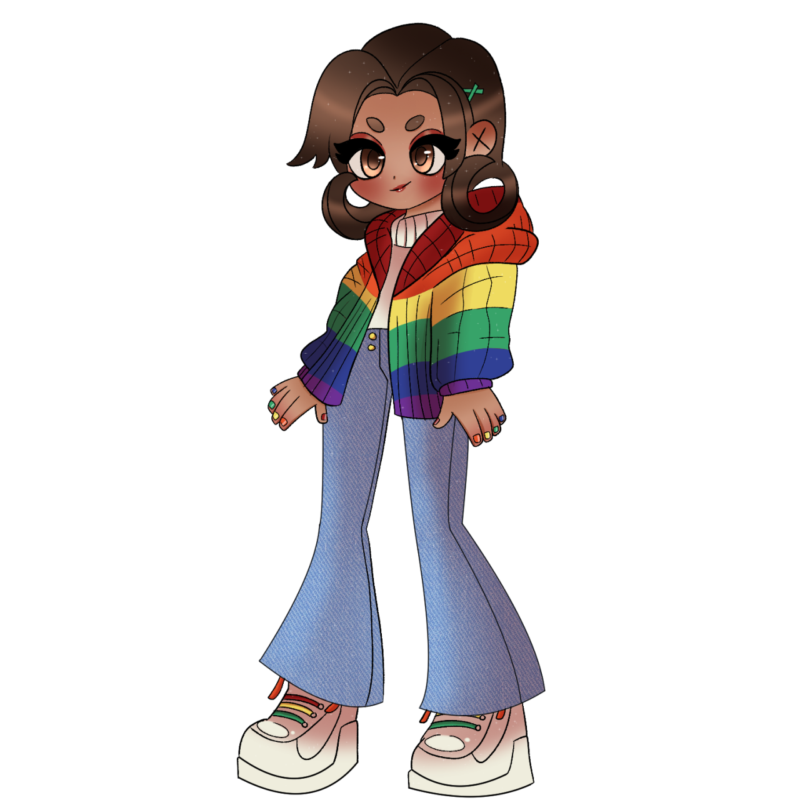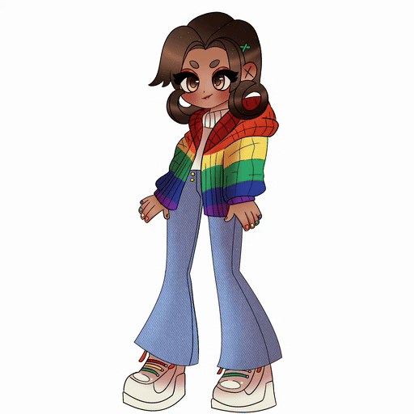 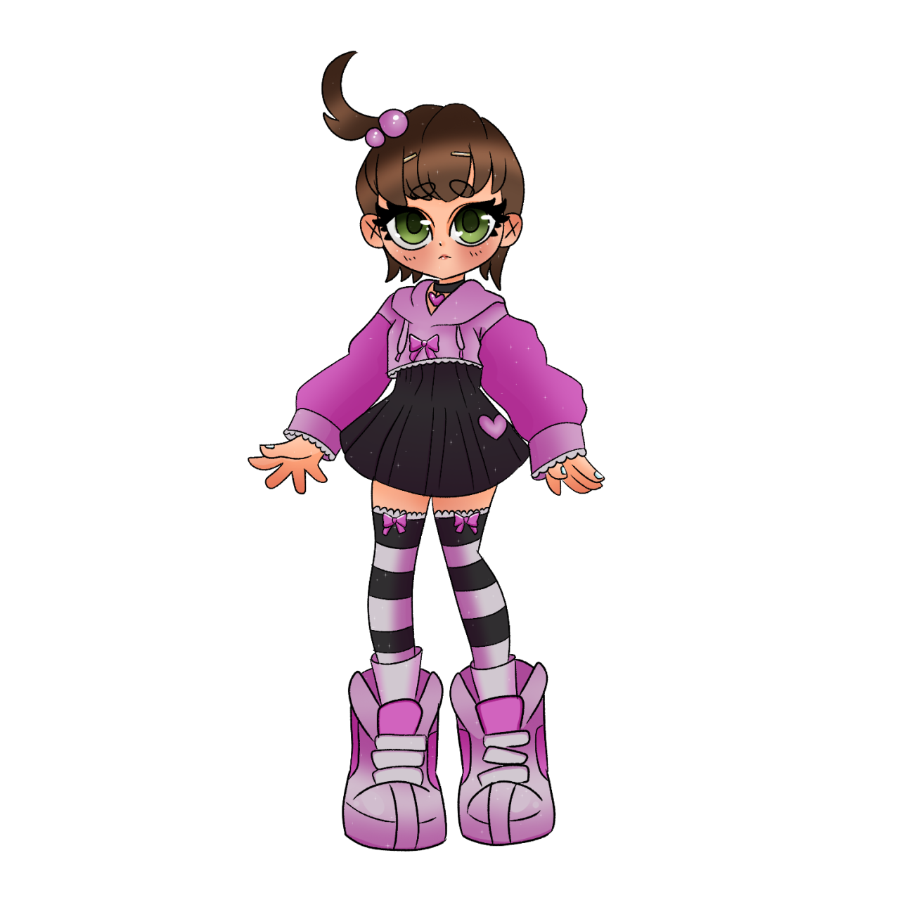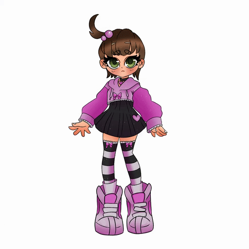 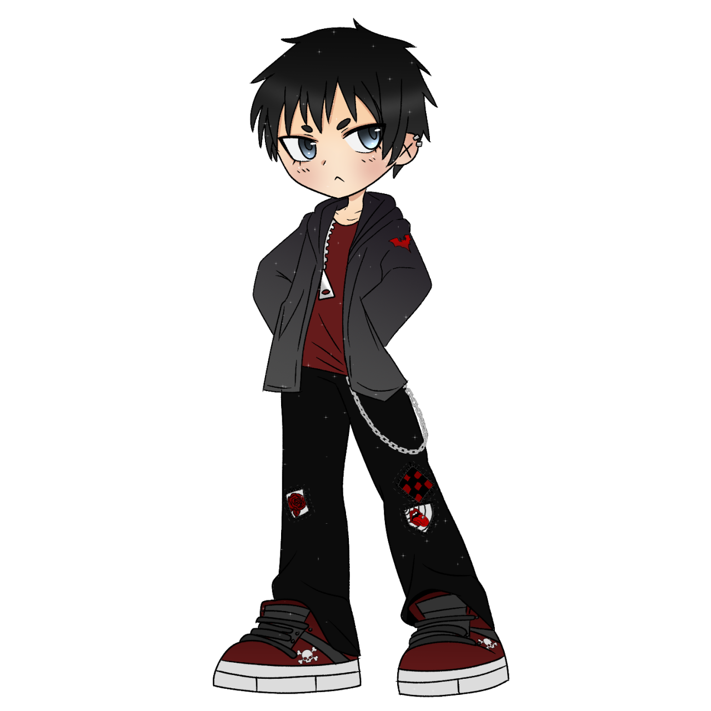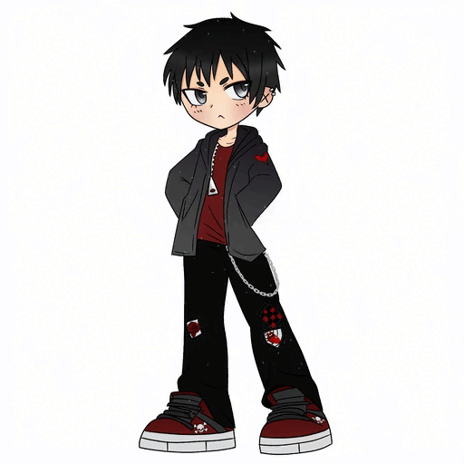
In the years 2018-2019 I was messing with a style where I used 'cutout style' backgrounds intended for sticker printing. Mostly this included circles but I would also try other shapes.
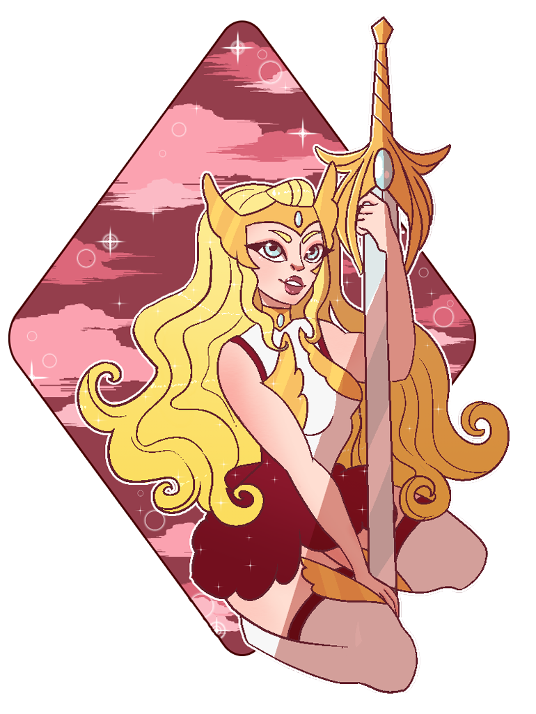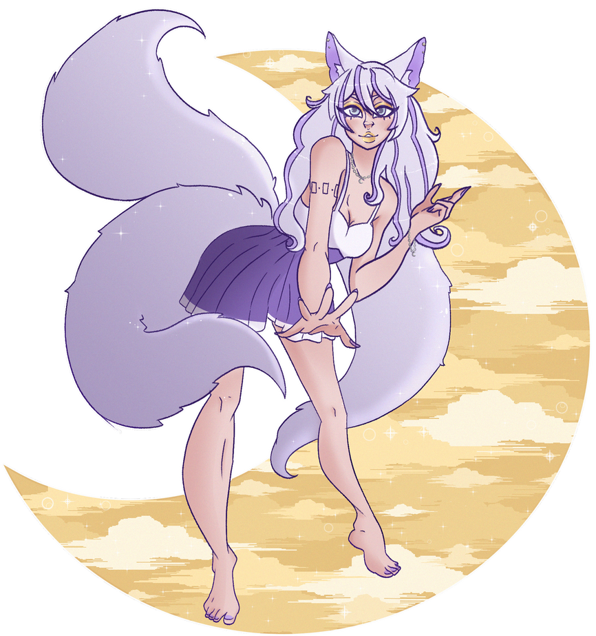
My Corpse Party Series was a set of three drawings I made back in 2020 and do use blood and depictions of violence so viewer discretion is advised. For these drawings, the source material I was inspired by was Corpse Party by Makoto Kedoin.
Shadows can transform your art from flat to lifelike. In this tutorial, I share tips by the user (-) on (-) on creating realistic shadows and improving your compositions.
you just gotta figure out how to do the mitten thing! (everybody does it differently, so whatever works for you)
make a little mitten shape, a bump for the big thumb muscle, a line for where you want to knuckles to be (and where the fingers end), and you can work out how the hand does hand things~
you can make them more simple or more real, however you want! hands are weird, so don’t worry if they keep looking wrong for a while, once you figure out what works for you, it’ll click. If you practice like 10 or-so basic hand shapes, you can make slight variations on all those, and 10 turns into 20 different hand poses~
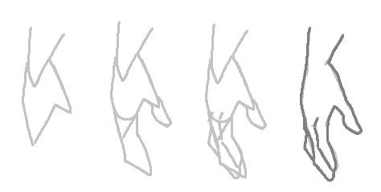
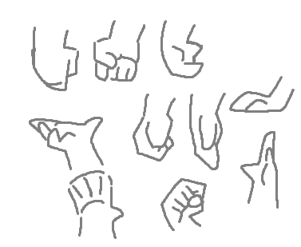
Good luck, you can do it, practice until you find your groove, hands are stupid, don’t worry if they don’t look right!
Stay ahead of the curve with these emerging trends in the digital art world, from AI-generated art to the rise of mixed media techniques.